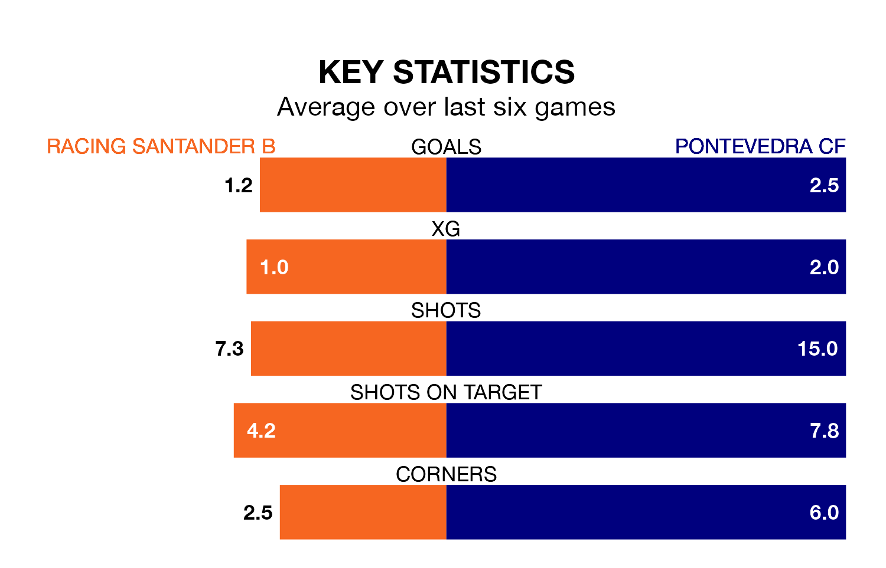

Sunday's match between Racing Santander B and Pontevedra CF promises to be one for the neutrals, as two of the Segunda División RFEF Group 1's most free-scoring sides go head-to-head.
Ahead of the game, Racing Santander B and Pontevedra sit joint-second and top in the goal-scoring charts, with 36 and 57 goals respectively.
Neco Celorio Garcia and Álvaro Santamaría Arenas lead the way for the home side, having bagged seven goals each in their 26 games to date.
And Rufino Familiar Sánchez has been the main man in the opponents' penalty box for Pontevedra, with 16 goals.
Pontevedra are top of the table after 26 games, of which they have won 16 and drawn seven, earning 55 points.
Racing Santander B are four places behind the visitors in fifth, with nine wins and nine draws putting them on 36 points.
The home side are in disappointing form in the Segunda División RFEF Group 1, with one win and two draws from their last six games.
With five wins and one loss over that period, Pontevedra's form is much better – they have taken 15 points from 18, compared to Racing Santander B's five.
Racing Santander B's last match was on Sunday, a 2-0 loss against Coruxo.
Pontevedra beat Real Avilés 2-0 last time out, also on Sunday, with Mario Gómez Gómez on the scoresheet.
Updated: 15:10 (UTC), 15/03/24